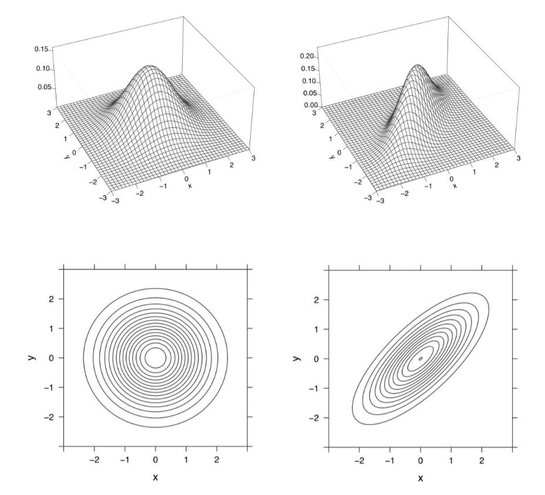

Appendix B: Probability review
B.4 Common probability distributions
Bivariate normal
-
The bivariate normal is defined here through its PDF — which is not given in its general form, but only in the case where \(X \sim \mathcal N(0, 1)\) and \(Y \sim \mathcal N(0, 1)\):
\[ f(x, y) = \frac{1}{2\pi\tau} \cdot \exp\left( -\frac{1}{2\tau^2} \cdot (x^2 - 2\rho xy + y^2) \right) \]
with \(\tau = \sqrt{1 - \rho^2}\), where \(\rho\) is the correlation between \(X\) and \(Y\).
If the marginal distributions of \(X\) and \(Y\) are given, \(\rho\) is still free to vary in \([-1, 1]\).
So, there are five parameters: \(\mu_X\), \(\sigma_X\), \(\mu_Y\), \(\sigma_Y\), and \(\rho\).
-
This figure from (Blitzstein and Hwang 2019) shows two bivariate normals with the same marginal distributions (the standard univariate normal) but different correlations \(\rho\):
knitr::include_graphics('images/bvn.jpg') -
The question is
Are both of these considered standard bivariate normals?
-
A real random vector \({\displaystyle \mathbf {X} =(X_{1},\ldots ,X_{k})^{\mathrm {T} }}\) is called a standard normal random vector if all of its components \({\displaystyle X_{k}}\) are independent and each is a zero-mean unit-variance normally distributed random variable, i.e. if \({\displaystyle X_{k}\sim \ {\mathcal {N}}(0,1)}\) for all \({\displaystyle k}\).
-
For any RVs \(X\) and \(Y\), independence implies \(\rho = 0\). So, according to this definition, the standard bivariate normal has PDF
\[ f(x, y) = \frac{1}{2\pi} \cdot \exp\left( -\frac{1}{2} \cdot (x^2 + y^2) \right) \]
and corresponds only to the graphs on the left.
-
In the general case, for \(X \sim \mathcal N\left(\mu_X, \sigma^2_X\right)\), and \(Y \sim \mathcal N\left(\mu_Y, \sigma^2_Y\right)\) and with \(\rho \neq 0\), the PDF is
\[\begin{multline} f(x,y) = \\ { \frac {1} { 2\pi \sigma _{X}\sigma _{Y}\tau } }\cdot \exp \left( -{ \frac {1}{2\tau^2} }\left[ \left( {\frac {x-\mu _{X}}{\sigma_{X}}} \right)^{2} - 2\rho \left( {\frac {x-\mu _{X}}{\sigma_{X}}} \right) \left( {\frac {y-\mu _{Y}}{\sigma_{Y}}} \right) + \left( {\frac {y-\mu _{Y}}{\sigma_{Y}}} \right)^{2} \right] \right) \end{multline}\]
with \(\tau = \sqrt{1 - \rho^2}\) as before.
-
The PDF of the conditional distribution of \(X\) given \(Y = y\) is
\[ f_{X \mid Y} (x, y) = \frac{f(x, y)}{f_Y(y)} \]
where \(f_Y\) is the marginal PDF
\[ \begin{aligned} f_Y(y) &= \int_{-\infty}^\infty f(x, y)\, dx \\ &= \frac{1}{\sigma_Y \sqrt{2\pi}} \cdot \exp\left( -(y - \mu_Y)^2 / 2 \sigma_Y^2 \right) \end{aligned} \]
yielding
\[ \begin{aligned} f_{X \mid Y} (x, y) &= \frac{f(x, y)}{f_Y(y)} \\ &= \frac{ { \frac {1} { 2\pi \sigma _{X}\sigma _{Y}\tau } }\cdot \exp \left( -{ \frac {1}{2\tau^2} }\left[ \left( {\frac {x-\mu _{X}}{\sigma_{X}}} \right)^{2} - 2\rho \left( {\frac {x-\mu _{X}}{\sigma_{X}}} \right) \left( {\frac {y-\mu _{Y}}{\sigma_{Y}}} \right) + \left( {\frac {y-\mu _{Y}}{\sigma_{Y}}} \right)^{2} \right] \right) }{ \frac{1}{\sigma_Y \sqrt{2\pi}} \cdot \exp\left( -(y - \mu_Y)^2 / 2 \sigma_Y^2 \right) } \\ \end{aligned} \]